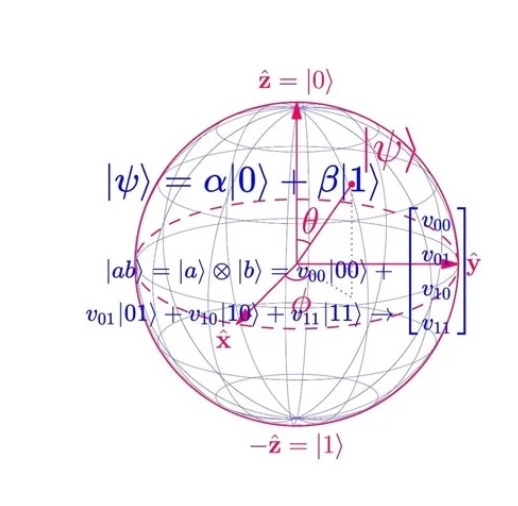

Notação de Vetor:
A matemática subjacente à computação quântica faz uso da notação de vetor para representar o estado quântico de um sistema.
Em vez de usar bits (0s e 1s) como na computação clássica, os qubits são representados como vetores em um espaço vetorial complexo chamado espaço de Hilbert.
Exemplo:
Um qubit pode ser representado por um vetor bidimensional.
Por exemplo, |0⟩ representa o estado do qubit no valor 0 e |1⟩ representa o estado do qubit no valor 1.
Superposição:
A superposição é uma propriedade fundamental dos qubits. Isso significa que um qubit pode existir em uma combinação linear de seus estados de base (0 e 1) ao mesmo tempo.
Os coeficientes dessa combinação linear são números complexos chamados amplitudes.
Exemplo:
Um qubit em superposição pode ser representado como α|0⟩ + β|1⟩, onde α e β são as amplitudes do estado 0 e 1, respectivamente.
Medição:
Ao medirmos um qubit, obtemos um resultado específico (0 ou 1). A probabilidade de obter cada resultado é determinada pelos quadrados dos módulos das amplitudes do qubit.
Exemplo:
Se tivermos um qubit em um estado α|0⟩ + β|1⟩, a probabilidade de medir 0 é |α|^2 e a probabilidade de medir 1 é |β|^2.
Operações Quânticas:
Assim como as portas lógicas na computação clássica, a computação quântica utiliza operações quânticas para manipular os qubits. Essas operações são representadas por matrizes unitárias chamadas operadores quânticos.
Exemplo:
A porta quântica Hadamard (H) é usada para criar superposição. Ela transforma o estado |0⟩ em uma combinação igual de |0⟩ e |1⟩.
Emaranhamento:
O emaranhamento é uma propriedade única dos sistemas quânticos em que dois ou mais qubits se tornam intrinsecamente ligados, de modo que o estado de um qubit não pode ser descrito independentemente do estado dos outros qubits.
Exemplo:
Dois qubits emaranhados podem ser representados como α|00⟩ + β|11⟩, onde α e β são as amplitudes correspondentes aos estados |00⟩ e |11⟩.
Recursos adicionais e tutoriais interativos:
IBM Quantum Experience:
A IBM oferece uma plataforma chamada
"IBM Quantum Experience" que permite explorar a computação quântica de forma interativa, incluindo tutoriais e exemplos práticos.
Acesse IBM Quantum Experience:
Se você não tiver uma conta, clique em
"Sign Up" para criar uma conta IBM.
Explore os Tutoriais Iniciais:
Após fazer login, explore os tutoriais e documentação disponíveis na plataforma. Isso fornecerá uma introdução aos conceitos básicos de computação quântica e à utilização da IBM Quantum Experience.
Acesse o Composer:
Vá para a seção
"Composer"na plataforma IBM Quantum Experience. Isso permite que você crie circuitos quânticos visualmente.
Experimente Circuitos Básicos:
Crie circuitos simples usando as portas quânticas disponíveis no Composer. Experimente com qubits, portas lógicas e medidas para entender como os circuitos quânticos são construídos.
Execute Seus Circuitos:
Após criar um circuito, você pode executá-lo em um simulador quântico ou até mesmo em um computador quântico real, dependendo da disponibilidade.
Interprete os Resultados:
Analise os resultados da execução do seu circuito. A plataforma fornecerá informações sobre os estados quânticos resultantes e possíveis medições.
Explore os Laboratórios e Desafios:
A IBM Quantum Experience geralmente oferece laboratórios interativos e desafios para aprimorar suas habilidades em programação quântica. Explore essas seções para prática adicional.
Você pode acessá-la em:
https://quantum-computing.ibm.com/
Qiskit Textbook:
O
"Qiskit Textbook" é um recurso online abrangente que aborda a teoria e a prática da computação quântica usando a biblioteca Qiskit.
Ele inclui explicações matemáticas claras e exemplos práticos.
Você pode acessá-lo em:
https://qiskit.org/textbook/
Quantum Computing Playground:
O
"Quantum Computing Playground" é um simulador interativo que permite explorar conceitos quânticos, como superposição, emaranhamento e operações quânticas.
Você pode experimentá-lo em:
http://www.quantumplayground.net/
Microsoft Quantum Development Kit:
A Microsoft oferece o
"Microsoft Quantum Development Kit", que inclui tutoriais e exemplos práticos para programação quântica usando a linguagem Q#.
Você pode encontrar mais informações em:
https://docs.microsoft.com/en-us/quantum/